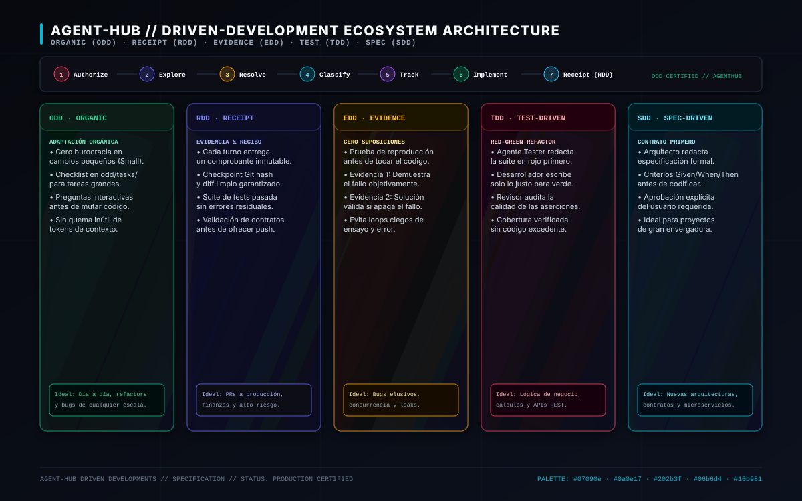

Organic Driven Development (ODD) y el Ecosistema de Flujos de IA
El desarrollo agéntico suele caer en dos extremos: o se improvisa sin estructura (generando alucinaciones y código roto), o se impone un Spec-Driven Development (SDD) en cascada donde hasta para arreglar un typo se queman miles de tokens en 5 agentes. ODD introduce la escala orgánica: adapta el esfuerzo y el proceso al tamaño real de cada tarea.
⚡ Arquitectura de Metodologías Agénticas
Visualiza el ciclo de 7 pasos de ODD y el ecosistema completo con RDD, EDD, TDD y SDD

🧩 Mapeo Arquitectónico: ODD en el Código de AgentHub
AgentHub cuenta con los cimientos técnicos para ejecutar este flujo sin fricción ni desperdicio de tokens
session.permission
Si el usuario solo hace una pregunta o pide una explicación, el turno corre en readOnly: true. No se arriesgan cambios accidentales ni se tocan archivos.
Rol: Explorador
Antes de modificar nada, se investiga el repositorio. Si la lectura es masiva, se delega al rol Explorador o se usa búsqueda indexada para no inundar de tokens la conversación principal.
questionOptions
Las dudas técnicas se resuelven investigando el código; las decisiones de producto se presentan con botones interactivos al usuario para que decida antes de mutar.
Small | Large
Small: se implementa directo en el turno sin burocracia. Large: genera un checklist en odd/tasks/<feature>.md visible en Documentos.
MemoryView
Para tareas Large, cada sub-paso se actualiza en tiempo real en la memoria persistente del espacio de trabajo, permitiendo pausar, reanudar y auditar el avance.
verifyBeforeHandoff
Verificación escalonada: bajo riesgo = diff visual interactivo; medio = suite de pruebas (`npm test`, `npm run build`); alto = auditoría cruzada de seguridad.
checkpointHash
El turno entrega el reporte final con estado inmutable: hash de checkpoint de Git, resumen de tests pasados y estado de git sin cambios huérfanos antes de ofrecer push.
📚 Catálogo de Metodologías "-Driven Development" para Agentes
Filosofías modernas orquestables en AgentHub para optimizar calidad de código, tokens y velocidad de entrega
ODD (Organic-Driven)
Elimina la burocracia en tareas simples e introduce estructura solo cuando la escala lo exige. No hay comandos especiales ni sobreingeniería de especificaciones iniciales.
RDD (Receipt / Review)
Todo cambio debe terminar con un "Recibo": un comprobante verificable con hash inmutable, log de tests limpios, diff sin secretos y verificación de contrato.
EDD (Evidence-Driven)
Exige que antes de tocar código se cree una prueba o script de reproducción que demuestre el fallo objetivamente (Evidencia 1). La solución solo es válida si apaga esa evidencia.
TDD (Test-Driven Agéntico)
El agente Tester escribe la suite de pruebas unitarias o de integración antes que el Desarrollador escriba el código de negocio. El Desarrollador solo implementa lo justo para pasarlas.
SDD (Spec-Driven / BDD)
El Arquitecto redacta un archivo de especificación completo con criterios Given/When/Then y endpoints. No se escribe código hasta que el usuario aprueba la especificación.
CDD / MDD (Context & Memory)
Aísla exploraciones pesadas en chats separados o worktrees para preservar limpio el presupuesto de tokens. Persiste lecciones y reglas aprendidas en archivos de memoria fija.
⚖️ Comparativa Directa: ODD vs SDD en AgentHub
| Dimensión | SDD Tradicional (Pipeline Rígido) | ODD (Organic Driven Development) |
|---|---|---|
| Gasto de Tokens en cambios pequeños | Muy Alto (dispara 4 o 5 agentes aun para un fix de 2 líneas) | Mínimo (clasifica como Small y resuelve inline en 1 turno) |
| Manejo de la Incertidumbre | Asume o redacta documentos extensos con premisas no verificadas | Paso 3 explícito: investiga o pregunta antes de redactar código |
| Escalabilidad en cambios grandes | Estructurado pero rígido ante cambios de requerimiento a mitad de camino | odd/tasks/<feature>.md desacoplado y reanudable paso a paso |
| Validación de Salida | Solo delegación de texto al siguiente agente | Quality Gates por riesgo (diff > test suite > auditoría cruzada RDD) |
🚀 Cómo integrarlo en AgentHub ahora mismo
Se añadió la plantilla odd en src/shared/team-templates.ts con la cadena táctica:
Explorador (investigación sin tokens) → Coordinador (clasifica/resuelve) → Desarrollador → Revisor (cierre RDD con checkpoint)